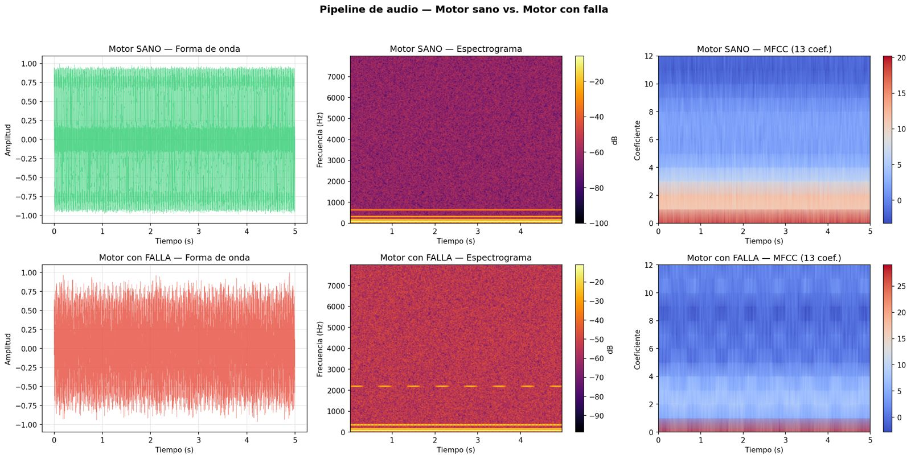

Detector de fallas mecánicas por sonido — inteligencia artificial al alcance de cualquier conductor.
Definición del proyecto, pivote a vehículos, documentación base.
Pipeline técnico: audio → espectrograma → MFCC. Revisado el 28 y 29 sep.
Protocolo de grabación de audio v1.1, solo mono. Aún sin probar en campo.
Arquitectura preliminar: prototipo Android con Flutter y servidor Python en la PC del equipo, sin costo y sin guardar audios. Aún no se construye.
Dos rondas de revisión, 28 y 29 de septiembre de 2026. En la primera encontramos que el pipeline completo se detenía en el paso 2 de 5, aunque las 14 pruebas de entonces pasaban. En la segunda lo probamos con grabaciones reales de micrófono y ajustamos dos puntos: la comparación entre teléfonos y las grabaciones largas.
AntesRechazaba toda ruta con .., incluida la del propio pipeline. Un enlace simbólico podía apuntar fuera de la carpeta sin ser detectado.
AhoraResuelve la ruta real y exige que el archivo esté dentro de la carpeta permitida. Bloquea escapes con .. y con enlaces simbólicos.
AntesSolo 16 y 32 bits. Un WAV de celular a 48 kHz se procesaba como si fuera de 44.1 kHz, con el eje de frecuencias corrido. En estéreo se perdía el canal derecho.
AhoraAcepta 8, 16, 24 y 32 bits, mezcla los canales a mono y remuestrea todo a 44.1 kHz. Un tono de 1,000 Hz grabado a 48 kHz se sigue midiendo en 1,000 Hz.
AntesNinguna prueba ejecutaba el pipeline completo, por eso el error pasó desapercibido.
AhoraTres pruebas corren los 5 pasos en una carpeta temporal y revisan que cada archivo de salida exista y tenga valores válidos.
AntesSe presentaban como prueba de que el sistema distingue fallas. En realidad comparaban dos señales que diseñamos distintas a propósito.
AhoraQuedan agrupadas como pruebas del generador sintético. Se agregaron pruebas físicas que no dependen de él: un tono conocido aparece en su frecuencia exacta.
AntesLos MFCC abarcaban hasta 22 kHz. Un teléfono que graba a 16 kHz no capta nada arriba de 8 kHz, así que el mismo sonido daba resultados muy distintos según el aparato.
AhoraLos MFCC se calculan entre 0 y 7.6 kHz, la banda que todos los teléfonos captan. Así, un modelo futuro aprenderá del motor y no del micrófono.
AntesUn audio de más de 30 segundos se rechazaba completo.
AhoraSe divide en segmentos iguales de hasta 30 s sin perder ninguna muestra: 75 s se analizan como 3 segmentos de 25 s. El límite por archivo es de 5 min y 64 MB.
Diferencia relativa entre sus MFCC. Mientras más baja, más comparables son dos grabaciones del mismo sonido hechas con aparatos distintos.
| Configuración | Diferencia |
|---|---|
| Antes: filtros hasta 22 kHz | 6.198 |
| Filtros hasta 8 kHz | 0.119 |
| Ahora: filtros hasta 7.6 kHz | 0.035 |
| Referencia: dos tomas distintas del mismo sonido | 0.031 |
Con 7.6 kHz la diferencia queda al nivel de la variación natural entre dos tomas. Se eligió 7.6 y no 8 kHz porque una grabación a 16 kHz ya pierde fuerza entre 7.6 y 8 kHz.

Siguiente paso: con la carga lista para audio de celular, el Avance 3 define cómo grabar: posición del teléfono, tomas, duración, ruido de fondo y etiqueta de cada archivo.
El micrófono del celular graba el sonido del vehículo
El audio se convierte en frecuencias vs. tiempo
Un modelo compara contra patrones conocidos
"Normal", "Posible falla" o "Falla detectada"
Nota: Demostración con audio sintético generado por software, no grabaciones reales. Las barras muestran la amplitud de cada frecuencia calculada por el pipeline, relativa al componente más fuerte de cada motor.
Frecuencia fundamental a 80 Hz con armónicos naturales. Energía concentrada en bajas frecuencias.
Golpeteo a 350 Hz (balero) y chirrido a 2,200 Hz (banda). Espectrograma más "ruidoso".
Si cada audio se graba distinto, un modelo aprende la distancia, el ruido o el teléfono en lugar del motor. Este protocolo fija las mismas condiciones para todas las grabaciones. Es la versión 1.1 (1 oct 2026), que fija la grabación en mono: aún no se prueba en campo y se ajustará con las primeras grabaciones reales.
Primero la seguridad. Nunca grabes con el motor encendido en un lugar cerrado. Mantén manos, ropa y teléfono lejos del ventilador, las bandas y el escape. Para acelerar se necesitan dos personas: una graba y otra acelera desde el asiento.
Las grabadoras de fábrica suelen guardar en M4A o AAC. El pipeline no las acepta y ese formato elimina detalle del sonido: usa una app que grabe en WAV.
Motor encendido, sin tocar el acelerador.
5 s en ralentí, acelerar suave a ~2,500 rpm, sostener 3 s y soltar. Dos veces.
3 s con el motor apagado, arrancar y dejar en ralentí. Útil si la falla aparece en frío.
Mismo lugar y posición, con el motor apagado. Es la referencia del ruido ambiental.
5 s de la toma A, antes de la sesión completa
Si algo falla, revisa la configuración de la app antes de seguir.
Una sola etiqueta por archivo. Si hay duda, va como “sin verificar”.
| Estado | ¿Entrena? |
|---|---|
| Sano verificado | Sí |
| Falla confirmada | Sí |
| Falla sospechada | No |
| Sin verificar | No |
Una falla solo cuenta como confirmada si indica quién la confirmó (mecánico, escáner OBD o reparación) y con qué evidencia. Nunca se guardan placas ni datos personales.
Sube un archivo WAV y mira su espectrograma y sus coeficientes MFCC, calculados con el mismo método del pipeline. El análisis ocurre en tu navegador: el archivo no se envía a ningún servidor.
Sin diagnóstico todavía. Esta herramienta muestra cómo el sistema "ve" un sonido. Aún no hay un modelo entrenado, así que no indica si un motor tiene falla.
o arrástralo aquí. También puedes probar un ejemplo:
Promedio del segmento, relativas a la más fuerte
| Frecuencia | Nivel |
|---|
Esta herramienta es una traducción a JavaScript del pipeline de Python. Se comparó número por número con el original en seis formatos de audio (8 a 32 bits, 8 a 48 kHz, mono y estéreo, con y sin segmentos): la diferencia máxima en los MFCC fue menor a 0.000000000001.
Python 3.9+
scipy.signal, wave
numpy, scipy.fft
matplotlib
HTML, Tailwind CSS y JavaScript
Pendiente
El audio utilizado es sintético — aún no se cuenta con grabaciones reales de vehículos.
No existe un modelo de IA entrenado — el pipeline prepara las características para uno futuro.
El ruido ambiental de la calle y la diversidad de vehículos son retos técnicos abiertos.
Este sistema proporciona advertencias tempranas, no previene accidentes directamente.